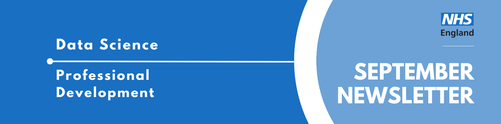
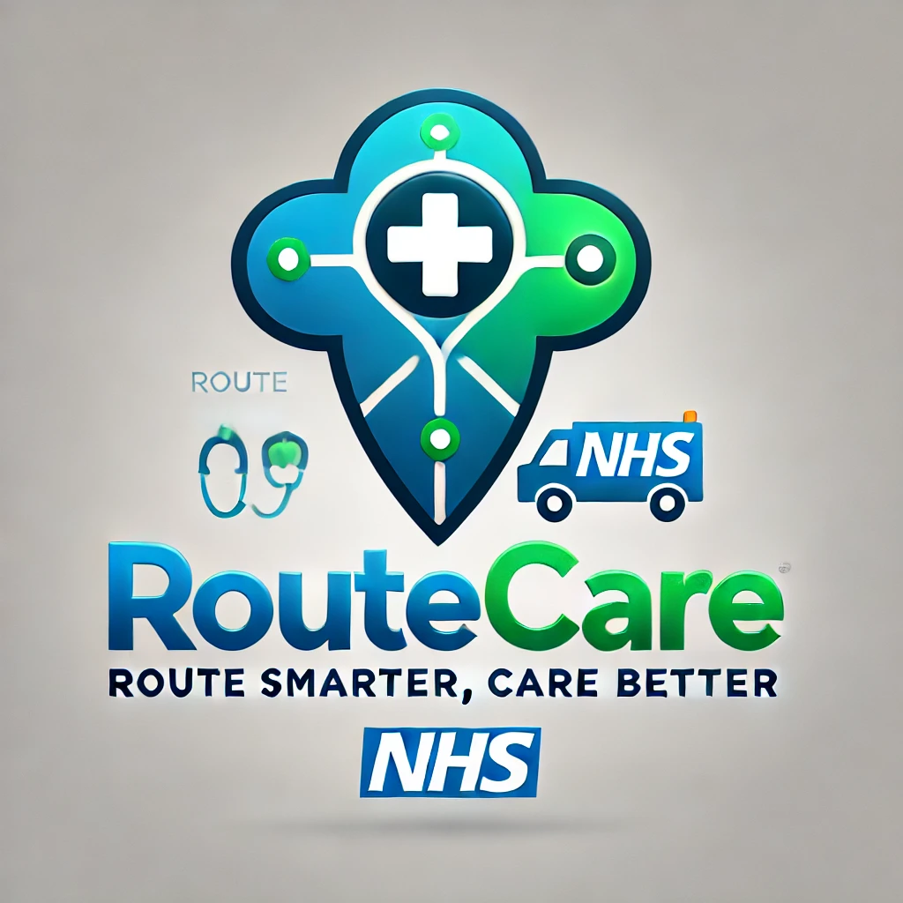

Professional Development Newsletter September 2024

Welcome to the latest Professional Development newsletter, brought to you by the Data Science skilled team Professional Development Functional Team.
The newsletter team are always happy to receive constructive feedback, and we invite you to send us any contributions you may have.
There are some legacy NHS Digital items which we have identified with❗
If you cannot access something of interest to you, please reach out.
Thanks for reading! – PD newsletter team
Civil Service Data Challenge Success!
Divya Balasubramanian (below, third from left) recently led her team to an amazing second place at the Civil Service Data Challenge. Read about the challenge and her experience below.

I was a part of one of the teams who were finalists at the civil service data challenge (CSDC) which is an annual event where teams come together to pitch innovative ideas to secure funding. Think of it like Dragon’s Den or Shark Tank but with friendlier judges who are all senior data leaders from across the public sector. A multidisciplinary team chosen from the applicants across public sector were tasked to build a product roadmap for RouteCare, an NHS geospatial tool, that can be pitched for funding. We were among the four finalists, and we came a close second place (still gutted!). While it meant we didn’t receive the funding, it was a huge achievement for the team! We were also the only all-women-panel which inspired several members of the audience who kindly congratulated us for our presentation - a highlight for me.
Now for some behind the scenes. This was not a hackathon but an entire “side” project involving multiple stakeholders. Once we were selected after the semi-finals, each team was allocated a mentor from the judging panel and ours was John Quinn, Chief Information Officer, NHS England. This helped in securing senior management buy-in straightaway, however expanded the vision of the product. John’s involvement opened several doors for us including obtaining buy-in from Helen Balsdon, Chief Nursing Information Officer, NHS England and partnership with Google to further build this tool.
We however lost a few team members to churn, and I took on the leadership of the tool. This was an excellent opportunity to pick up skills including different styles of leadership (technical and motivational), influencing senior stakeholders, collaboration with team members with diverse backgrounds, commercial negotiation and most of all, public speaking (presenting to a 200-member audience whilst being filmed isn’t my idea of fun).
I would highly recommend applying for the next cohort of CSDC if you would like an overall development opportunity which is unique and will certainly be a valuable experience for your career!
Events
Lots of exciting things coming up! Contact Us if there’s a specific event you think would be great advertise in the next newsletter!
The Turing Lectures: Can we trust AI?
Monday 14th October, 19:30-21:30, In person (London) AND online
Is AI eroding public confidence in technology? Can AI be trustworthy? In the second Turing Lecture, Abeba Birhane will unpack the biases in data and its downstream impact on AI systems and shows how it can lead to unfair outcomes in our daily lives.
She’ll look at why this happens, why it’s such a big issue and how researchers, activists and policy makers are tackling the problem.
By the end of this talk, you’ll have an improved understanding of the AI systems that increasingly shape our world. You’ll be better equipped to ask critical questions about AI technologies and understand why rigorous testing of AI systems and accountability of tech corporations is so crucial - no matter your background, you’ll learn something valuable.
Online: Free
In person: £10 (covers drinks and nibbles)
Data Science Festival: Oktoberfest
Saturday 19th October 2024, 9am-5pm, CodeNode London
Apply for a FREE ballot entry to this years DSF Oktoberfest. Top tech speakers, incredible partners and a thriving community. There will be a mixture of talks featured at the festival, covering all things data (science, engineering, etc) and a variety of technical levels.
NHS RPySOC 2024 Conference
Thursday 21st-22nd November, 9am-5pm, in-person (Birmingham) / Online
The NHS RPySOC 2024 conference is open for registration now! It will be on 21st & 22nd November in Birmingham. This is jointly hosted by the NHS R Community and NHS.pycom, and also promotes Open Source.
- Day 1 will be a mixture of presentations, workshops and lightening talks
- Day 2 will be ‘Unconference’ with suggestions for topics being taken on day 1.
It’s a great chance to show off our work, share our learning with a like minded community and learn a few things yourself, such as the state of the industry and how techniques are being applied elsewhere.
You can either attend:
- In-Person (The ICC, Hall 11, Birmingham B1 2EA (Sold Out: Waiting List Only)
- Online
See more future events on our FutureNHS page - scroll down to “Our Events” to see the calendar
Know of any events we should feature next month? Let us know by clicking the “Contribute” button, or here.
Knowledge Sharing
Python in an hour
Have you been stuck in an Excel rut for years and want to try out something new? Or maybe you have a team you are trying to convince of the wonders of python, but need to show them quickly what it can do.
Check out the Python in an Hour Git repo. It can be run either on GitHub codespaces, or Google Colab, completely for free - you just need an account. See a simple data pipeline, from importing, to procesing, to outputting graphs, all done just with a few clicks.
Past AnalystX DS Huddles
Check out some recordings of previous talks we have been hosting - also known as Huddles! These talks cover a range of data science topics with a range of speakers, both internal and external to the NHS.
Check them out on our FutureNHS page.
Have a topic you’d be keen to share? Contact us and let us know!
Check out all the resources in the Resources page on our FutureNHS page! Can you spot something missing? Contact us!